渴望学习的可以直接跳过，我们以最快的速度讲解
首先我要介绍一下archlinux，面向小白的说，就是一个超帅的很高级的操作系统，使用它会让人觉得"哇！电脑高手!"。而他人之所以对你有如此评价，是因为使用它有着极大的门槛，也就是安装难度和使用难度极大。接下来你就会感受到它有多么难了。但是这里教程我一定要把你教会的！
那么我们再来谈谈真正archlinux系统吧，它的好处，它的特点。
BlackArch 面向网络安全的黑客系统，超过3000种网络安全工具，可与日用Arch系统共存，适合安全研究
Arch Linux ARM 及其衍生版，这是面向嵌入式的linux系统，适用于树莓派等数百种开发板,从零定制，极致性能，让嵌入式研究有了新的滚动优势
当然，还有更多的版本，毕竟linux大家庭从来如此，如果想要了解更多可以进入下面的archlinux官网进行深度了解，我们这里只展示原始archlinux的安装和学习
相关链接
Arch Linux 官方网站
— 了解 Arch Linux 最新动态与下载
Arch Wiki
— 最全面的 Arch Linux 文档
这里的iso文件我会定期更新，下载于中科大源，适合中原地区的朋友，其他地区建议到官网查看并找到相应镜像站
Arch download
archlinux镜像总站---下拉找到中国区域，选择最合适你的，离你地理位置越近越好
下载 Arch Linux ISO 镜像元数据文件，双击后开始下载正式iso文件
制作系统启动盘是安装 Arch Linux 的第一步。将上一步下载好的 ISO 镜像写入 U 盘即可得到启动盘。
Windows 用户推荐使用 Rufus：选择 U 盘和 ISO 镜像，分区类型选 GPT，文件系统选 FAT32，点击开始即可。
Linux / macOS 用户
Linux / macOS 用户
(先进入终端)
使用 dd 命令：sudo dd if=archlinux.iso of=/dev/sdX bs=4M status=progress conv=fsync

将制作好的 U 盘插入电脑，重启并进入 BIOS/UEFI 设置，将启动顺序调整为优先从 U 盘启动（USB Boot），保存后重启即可进入 Arch Linux 安装环境。
进入 live 环境后，首先需要配置网络连接：
- 有线网络通常已自动连接，可用
ping archlinux.org测试连通性 - 无线网络使用
iwctl连接：先输入iwctl进入交互模式，然后station wlan0 get-network(按键盘Tab键会根据首字母自动补全单词)扫描，station wlan0 connect “想要选择的网络”输入密码后连接
这里因为是虚拟机就没有展示wlan0，可以用ping 有效网址 比如ping baidu.com来验证是否连接成功网络
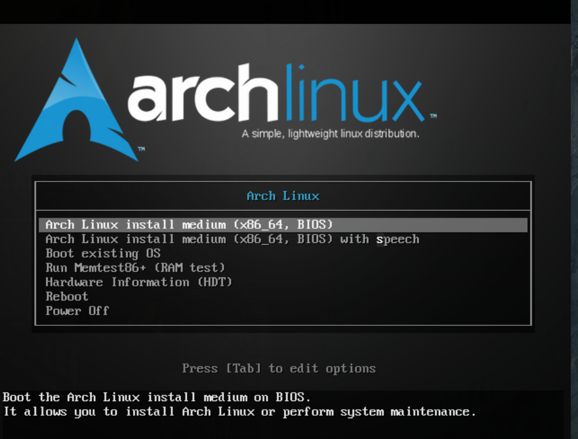
进入界面，默认选第一个，文盲选(带读音版本）第二个
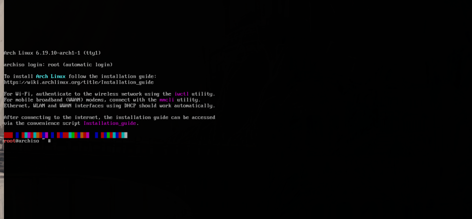
载入完成界面
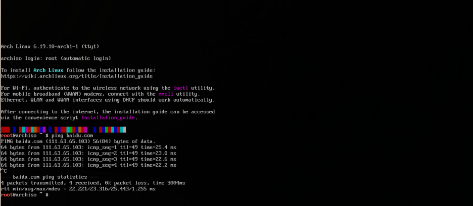
使用ping指令验证网络是否连接
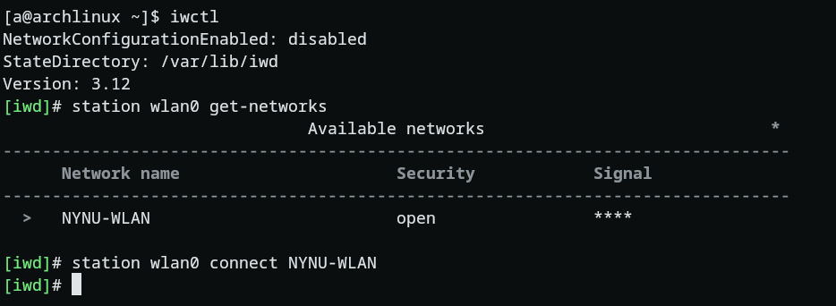
iwctl连接互联网示例子
使用
lsblk 或 fdisk -l 查看磁盘信息，确认你要安装的目标硬盘。然后使用 gfdisk进行分区。
按o重写，按n新建，输入1，出现第一个让你输入数字的直接回车，第二个输入+512M，第三个输入EF00，再按一次n，第一次回车之后第二个输入你想要的主空间大小比如100G（也可以回车默认全部选中），剩下全部回车，按p检查空间分配是否符合预期，不符合按o重写再来一遍。符合按w写入并退出
推荐分区方案（UEFI）：
- EFI 分区：512MB ~ 1GB，类型
EFI System - 根分区：剩余空间，类型
Linux filesystem - （可选）Swap 分区：内存大小的 1~2 倍
图片演示区域 — 请将图片放入此处
点击可放大查看
点击可放大查看
先用lsblk查看你的分区格式，看到树状图的那部分，一般是sda1 和 sda2 我这里是虚拟机所以是vda
对照你的分区名字输入相对应的指令，不要直接照抄，要把sdXn切换为你从树状图看到的
格式化分区并挂载。通常将根分区格式化为 ext4，使用 mkfs.f -F 32 /dev/sdXn 格式化引导分区（空间小的那部分，一般是512M，记得把sdXn换成你的） mkfs.ext4 /dev/sdXn格式化主空间（大的那个），然后用 mount /dev/sdXn /mnt 命令将主分区挂载到 /mnt用mkdir /mnt/boot && mount /dev/sdXn /mnt/boot 创建并把跟分区挂载到boot
图片演示区域 — 请将图片放入此处
点击可放大查看
点击可放大查看
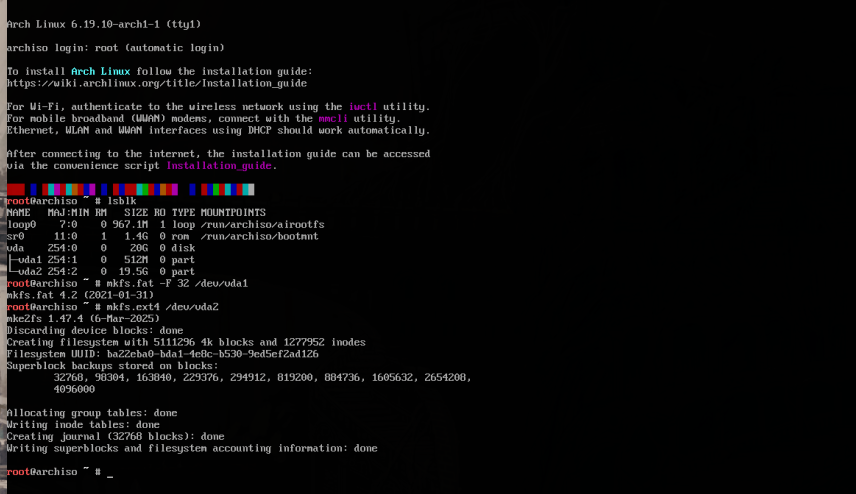
使用
pacstrap /mnt base linux linux-firmware sudo vim
安装基本系统和基本工具。也可以可以切换内核，比如linux-zen内核（性能更强，耗电更大）使用pacstrap /mnt base linux-zen linux-firmware sudo vim 进行安装
图片演示区域 — 请将图片放入此处
点击可放大查看
点击可放大查看
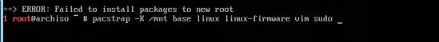
使用
arch-chroot /mnt 切换到新安装的系统环境中。之后的所有操作都在新系统里进行。
进入新系统：
现在你已经在新的 Arch Linux 系统中了，接下来进行系统配置。
arch-chroot /mnt现在你已经在新的 Arch Linux 系统中了，接下来进行系统配置。
图片演示区域 — 请将图片放入此处
点击可放大查看
点击可放大查看
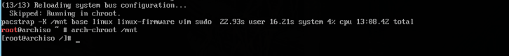
设置时区为中国上海（Asia/Shanghai），并同步硬件时钟。
设置时区：
同步硬件时钟：
这条命令确保系统时间和硬件时间一致，双系统时尤为重要，可以避免 Windows 和 Linux 时间不同步的问题。
ln -sf /usr/share/zoneinfo/Asia/Shanghai /etc/localtime同步硬件时钟：
hwclock --systohc这条命令确保系统时间和硬件时间一致，双系统时尤为重要，可以避免 Windows 和 Linux 时间不同步的问题。
图片演示区域 — 请将图片放入此处
点击可放大查看
点击可放大查看
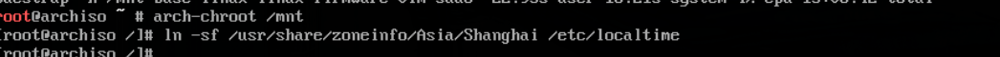
设置系统语言和本地化（locale），让系统支持中文显示。
编辑 locale 配置文件：
找到并取消以下行的注释（删除前面的 #）：
（如果不会用 vim，可以用
生成 locale：
设置默认语言：
建议默认使用英文，避免 TTY 下中文乱码问题。桌面环境安装后再设置为中文即可。
vim /etc/locale.gen找到并取消以下行的注释（删除前面的 #）：
en_US.UTF-8 UTF-8zh_CN.UTF-8 UTF-8zh_TW.UTF-8 UTF-8（如果不会用 vim，可以用
nano /etc/locale.gen，按 Ctrl+X 退出保存）生成 locale：
locale-gen设置默认语言：
echo "LANG=en_US.UTF-8" > /etc/locale.conf建议默认使用英文，避免 TTY 下中文乱码问题。桌面环境安装后再设置为中文即可。
图片演示区域 — 请将图片放入此处
点击可放大查看
点击可放大查看
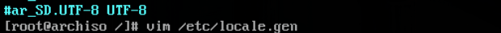
设置主机名（hostname）和 hosts 文件，这是网络识别你电脑的名称。
设置主机名（例如 archlinux）：
编辑 hosts 文件：
添加以下内容（把 archlinux 换成你的主机名）：
echo "archlinux" > /etc/hostname编辑 hosts 文件：
vim /etc/hosts添加以下内容（把 archlinux 换成你的主机名）：
127.0.0.1 localhost ::1 localhost 127.0.1.1 archlinux.localdomain archlinux
图片演示区域 — 请将图片放入此处
点击可放大查看
点击可放大查看
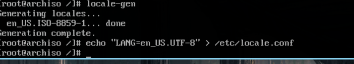
创建普通用户并设置密码，以及设置 root 密码。
设置 root 密码：
输入两次密码（注意：输入时不显示任何字符，这是正常的安全设计）
创建普通用户（例如用户名 misser）：
参数说明：
设置用户密码：
配置 sudo 权限（让用户可以使用 sudo 命令）：
找到
这样 wheel 组的用户就可以使用 sudo 了。
passwd输入两次密码（注意：输入时不显示任何字符，这是正常的安全设计）
创建普通用户（例如用户名 misser）：
useradd -m -G wheel -s /bin/bash misser参数说明：
-m 创建家目录，-G wheel 加入管理员组，-s /bin/bash 指定默认 shell设置用户密码：
passwd misser配置 sudo 权限（让用户可以使用 sudo 命令）：
pacman -S sudo（如果未安装）EDITOR=vim visudo找到
# %wheel ALL=(ALL:ALL) ALL 这行，删除前面的 # 号，保存退出。这样 wheel 组的用户就可以使用 sudo 了。
图片演示区域 — 请将图片放入此处
点击可放大查看
点击可放大查看
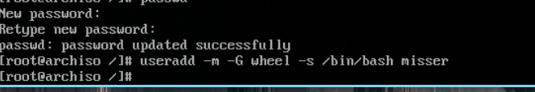
安装并配置引导程序。这里以 GRUB 为例，支持双系统（与 Windows 共存）。
安装 GRUB 和相关工具：
—
—
—
安装 GRUB 到 EFI 分区：
注意：
开启双系统检测：
编辑
这样 os-prober 才会去扫描 Windows 等其他系统。
生成 GRUB 配置文件：
如果输出中看到
双系统注意事项：
pacman -S grub efibootmgr os-prober—
grub：引导程序本体—
efibootmgr：管理 UEFI 启动项—
os-prober：自动检测其他系统（如 Windows），实现双系统引导安装 GRUB 到 EFI 分区：
grub-install --target=x86_64-efi --efi-directory=/boot --bootloader-id=GRUB注意：
/boot 是 EFI 分区的挂载点，如果你的 EFI 分区挂载在其他位置（如 /boot/efi），请对应修改。开启双系统检测：
编辑
/etc/default/grub，取消这一行的注释：#GRUB_DISABLE_OS_PROBER=false → GRUB_DISABLE_OS_PROBER=false这样 os-prober 才会去扫描 Windows 等其他系统。
生成 GRUB 配置文件：
grub-mkconfig -o /boot/grub/grub.cfg如果输出中看到
Found Windows Boot Manager，说明双系统配置成功！双系统注意事项：
- 在安装 Arch 之前确保已经为 Arch 预留了空闲磁盘空间
- 确保 Windows 的 EFI 分区没有被格式化（通常在安装前就能看到）
- 如果使用同一块硬盘，EFI 分区可以共用，不要重复创建
- 安装完成后重启，GRUB 菜单会同时显示 Arch Linux 和 Windows Boot Manager
图片演示区域 — 请将图片放入此处
点击可放大查看
点击可放大查看
安装完成！退出 chroot 环境，卸载分区，重启进入全新的 Arch Linux 系统。
退出 chroot：
卸载所有分区：
重启系统：
拔出 U 盘后，系统将启动到 GRUB 引导菜单，选择 Arch Linux 即可进入你的新系统！
恭喜你，你已经成功手动安装了 Arch Linux！
exit卸载所有分区：
umount -R /mnt重启系统：
reboot拔出 U 盘后，系统将启动到 GRUB 引导菜单，选择 Arch Linux 即可进入你的新系统！
恭喜你，你已经成功手动安装了 Arch Linux！
图片演示区域 — 请将图片放入此处
点击可放大查看
点击可放大查看
系统安装完成了吗？接下来学习如何使用 Arch Linux！
常用软件安装、桌面环境配置、系统美化……都在这里！
进入使用教程 → Arch Linux 使用指南
常用软件安装、桌面环境配置、系统美化……都在这里！